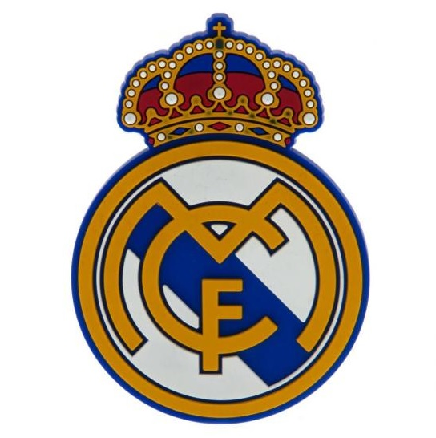

Real Madryt
Od Santiago Bernabéu, przez Di Stéfano, Juanito, Butragueño, Raúla, Zidane'a, Florentino czy Ramosa i Cristiano… Trzynaście Pucharów Europy, ponad trzydzieści mistrzostw Hiszpanii, tysiące niezapomnianych spotkań, setki interesujących anegdot, wielkie transfery, boje z Barceloną… Wszystko w osiemnastu rozdziałach o największym klubie w historii piłki nożnej.
W trakcie pandemii koronawirusa klubowa telewizja przypomniała multum historycznych meczów, jakie w przeszłości rozgrywali Królewscy. RealMadrid TV regularnie emitowało kolejne spotkania, które w całości można oglądać w mediach społecznościowych. Warto odświeżyć pamięć i przypomnieć sobie wiele pięknych chwil.
Dotychczas wiedzieliśmy, że wartość przebudowy Santiago Bernabéu to 525 milionów euro, które dzielą się na następujące inwestycje: 300 milionów euro na prace budowlane; 100 milionów euro na wyposażenie technologiczne obiektu; 125 milionów euro na poprawienie infrastruktury, która pozostanie na stadionie. Nowy obiekt ma mieć dobudowane 3 tysiące miejsc, ale jego pojemność pozostanie taka sama.